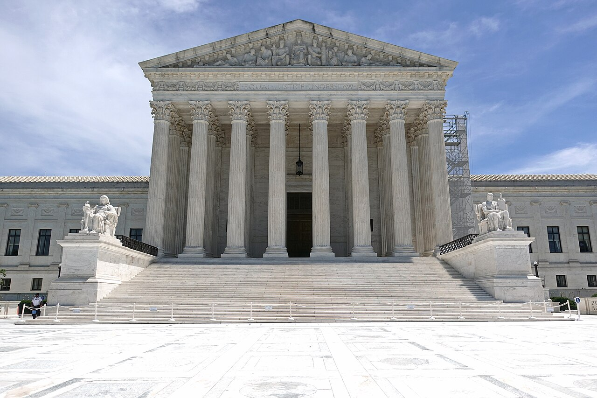
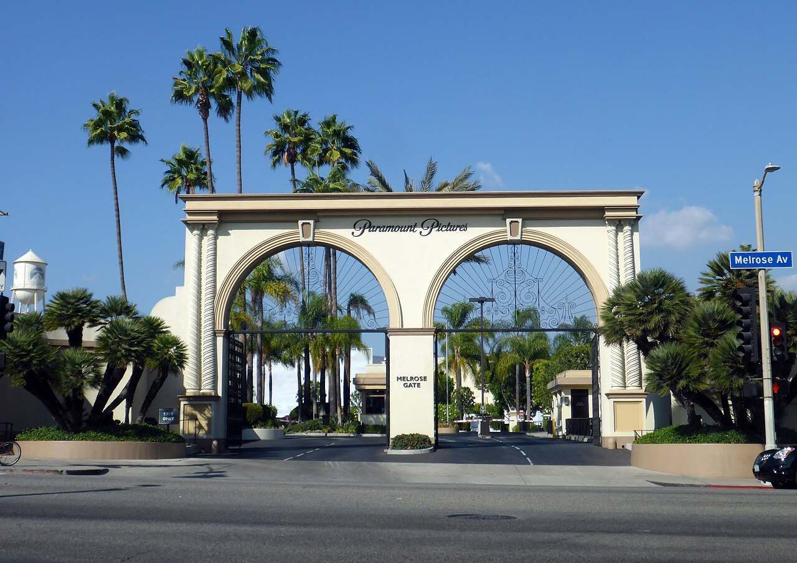

Vol. I · No. 56 · Monday, July 13, 2026 · 13 items · 6 sections · ~15 min read
The ceasefire is a memory: a second night of American strikes on Iran and a Gulf-wide missile barrage reopen the war, even as Wall Street's earnings season starts, a white-shoe firm turns on itself over a Trump case, and Disney's remake machine stalls again.
The Splash · The world · The Gulf · cross-spectrum LCR
A second night of American strikes on Iran, and Tehran answers across five Gulf states
The Strait of Hormuz, the twenty-mile chokepoint at the center of the dispute, seen from orbit. — Wikimedia Commons / NASA MODIS, public domain
American forces struck Iran for a second consecutive night on Sunday, July 12, with the order given by President Trump at 5:00 p.m. Eastern, according to CENTCOMInstitutionU.S. Central Command, which runs American military operations across the Middle East and is directing the current Gulf strike campaign against Iran., which said the operation was meant to keep “degrading their ability to attack civilian mariners and commercial ships freely transiting the Strait of HormuzPlaceThe roughly twenty-mile waterway between Iran and Oman through which about a fifth of the world’s seaborne oil passes. Closing it is Iran’s chief leverage over global energy prices..” The wave hit dozens of targets, air defenses, coastal radar, missile and drone sites, and small boats, and reportedly used one-way attack sea drones for the first time; the previous night’s barrage had struck about 140 targets.
Iran answered directly. The IRGCInstitutionIran’s Islamic Revolutionary Guard Corps, the elite force that controls the country’s missile arsenal and its posture in the Strait of Hormuz. fired missiles and drones at American bases across five Gulf states, Qatar, Bahrain, Kuwait, Oman, and, its state media claimed, Jordan, where the military said it intercepted four missiles over its airspace. Sirens sounded in Bahrain, home to the U.S. Navy’s Fifth Fleet, and Kuwait reported dealing with “hostile aerial targets.” In Qatar, three people, including a child, were injured by falling shrapnel.
The exchange has narrowed to a single, disputed question: whether Hormuz is open. The Guard declared the strait “closed until further notice,” while U.S. officials insist it remains open and say they are escorting commercial traffic through it. Ship-tracking told the real story, with transits collapsing to a handful of vessels. Brent crude rose more than 4 percent on Monday to about $79 a barrel, unwinding oil’s recent slide back toward pre-war levels, and the fighting has ruptured the sixty-day negotiating window opened by last month’s U.S.-Iran memorandum, now barely at its halfway mark.
“The Strait of Hormuz will be closed until further notice.”
— Islamic Revolutionary Guard Corps, July 12
Framing noteThe right (Fox) leads with Iran breaking the truce and a “massive U.S. response”; the left (Al Jazeera) leads with the Gulf-state civilian toll and a fragile agreement disintegrating. Same strikes, opposite verdict on who reopened the war.
The Front · Law & the courts · New York
A partnership revolt inside Sullivan & Cromwell over its latest Trump case
Sullivan & CromwellInstitutionA white-shoe Wall Street firm founded in 1879, among the most prestigious in capital markets and M&A. Its client-selection choices carry outsized reputational weight across the bar. has quietly stepped in to help President Trump prepare a Supreme Court petition seeking review of the roughly $83 million E. Jean CarrollPersonThe writer whose civil juries found Trump liable for sexual abuse and defamation. The firm’s work on his appeal is what set off the internal revolt. defamation verdict, and its own partners are in open revolt. Co-chair Robert GiuffraPersonSullivan & Cromwell co-chair and the architect of the firm’s Trump representations, who had assured partners the Carroll matters were off-limits. had assured partners that the Carroll cases were off-limits when the firm agreed last year to handle Trump’s criminal-conviction and civil-fraud appeals; he is now reportedly among the lawyers doing the Carroll work.
The sharper grievance is governance. The firm’s executive committee took on the matter without consulting the managing partners committeeConceptThe partnership body that normally has final say over controversial client intake. Bypassing it is the process breach at the heart of the partner anger. that normally vets controversial representations, even as the firm denied any involvement to reporters. Partners cite both the reputational cost of the underlying sexual-abuse allegations and their exposure should a Democratic House open investigations in 2027. The Wall Street Journal broke the friction; the National Law Journal confirmed the firm had formally joined the Carroll team on July 10.
Why it mattersThis is the fault line running through elite BigLaw in the Trump era, drawn inside one of the firms on any capital-markets lawyer’s short list: who decides which clients a partnership will carry, and what a marquee representation costs the people whose names are on the door.
Earnings season opens Tuesday, and Goldman is set for a blockbuster
Wall Street’s second-quarter reporting season begins before Tuesday’s open, when JPMorgan, Goldman Sachs, Citigroup, Wells Fargo, and BlackRockInstitutionThe world’s largest asset manager, with more than $12 trillion under management, reporting alongside the big banks Tuesday. all report on the same morning as the June inflation print. JPMorgan is expected to earn about $5.62 a share on roughly $49.5 billion of revenue, up around 10 percent from a year ago on surging investment-banking fees and trading. Goldman is the standout: analysts see earnings near $14.47 a share, up more than 32 percent, on blockbuster trading and advisory activity.
Options markets are bracing for it, pricing single-day moves from about 4.4 percent for JPMorgan to 6.0 percent for Goldman. The number that will actually set the tone is net interest marginConceptThe spread between what a bank earns on loans and securities and what it pays on deposits. It is the quarter’s most-watched read on core profitability., the spread that decides whether core lending profits can keep pace with the trading windfall, and it turns on a rate path that new Fed Chair Kevin WarshPersonThe Federal Reserve chair whose first Monetary Policy Report struck an inflation-first tone, leaving the timing of any rate cut, and banks’ margin outlook, unusually open. has left deliberately open.
Why it mattersThe banks are the tape’s first hard read on the quarter, and a record advisory-and-trading haul confirms the deal machine that a capital-markets practice lives on is running hot into the back half of the year.
Capability, the labs, and the policy machine racing to price them.
Artificial intelligence · Washington
The Fed puts a venture capitalist at the center of AI and jobs
Marc Andreessen, named to co-lead the Federal Reserve’s first task force on AI, productivity, and employment. — Wikimedia Commons / CC BY
Federal Reserve Chair Kevin WarshPersonThe Fed chair, who has launched a sweeping external review of U.S. monetary policy organized into five outside task forces, of which the AI-and-jobs group is one. has named Marc AndreessenPersonCo-founder of Andreessen Horowitz and one of Silicon Valley’s most influential investors, whose firm holds billions of dollars in AI positions., the venture capitalist, to co-lead a new Productivity and Jobs task forceConceptThe first formal Federal Reserve body devoted to how artificial intelligence reshapes productivity, employment, and monetary policy, with recommendations due by the end of 2026., the first formal Fed body dedicated to how artificial intelligence reshapes productivity, employment, and the setting of interest rates. He co-leads alongside the Stanford economist Charles I. Jones and Microsoft executive Asha Sharma, one of five outside groups in Warsh’s broad review, with recommendations due by year-end.
The appointment carries a conflict question the Fed will have to manage in the open. Andreessen HorowitzInstitutionThe venture firm, known as a16z, among the largest AI-focused investors; friendlier AI policy directly benefits its portfolio. holds billions of dollars in AI investments that stand to gain from lighter-touch policy, and Andreessen and Warsh are described as friends of some thirty years. Putting an investor with that exposure inside the apparatus that studies AI’s macroeconomic effects is exactly the kind of arrangement critics say blurs the line between advising the central bank and lobbying it.
Why it mattersThis is where AI capability, the rate-setting machine, and the conflict-of-interest question all meet. The Fed is now formally trying to price what AI does to jobs and productivity, and it has handed part of that pen to someone whose fund profits from the answer.
Capital markets, dealflow, and the firms that lawyer them.
Markets & deals · New York
Brookfield floats a data-center IPO into a hot week for new listings
The New York Stock Exchange, where Csquare intends to list as “CSQR” around July 16. — Wikimedia Commons / CC BY-SA
CsquareInstitutionA data-center operator with engineered facilities across the U.S., Canada, and the U.K., seeking a New York listing under the ticker “CSQR.”, the data-center operator backed by BrookfieldInstitutionBrookfield Corporation, the Canadian alternative-asset giant and Csquare’s controlling sponsor, with hundreds of billions of dollars in infrastructure and real assets., has set terms for a New York Stock Exchange debut, offering 50 million shares at an expected $23 to $27. At the $25 midpoint the deal raises about $1.25 billion and values the company near $4.2 billion at the top of the range, with pricing expected around July 16 under the ticker “CSQR.” The portfolio spans engineered data centers across the United States, Canada, and the United Kingdom, making this an AI-infrastructure listing in all but name.
The structure is the tell for anyone reading the prospectus. Brookfield keeps roughly 67 percent of the voting power after the offering, a controlled-companyConceptAn exchange designation for a company whose insiders hold a voting majority, which exempts it from several board-independence rules and concentrates control with the sponsor. position that lets the sponsor retain effective control while selling a minority to the public. Csquare joins a crowded calendar of pricings this week as issuers rush to list into an open, AI-hungry market.
Why it mattersData centers are where the capital-markets story and the AI story fuse: the compute buildout now needs public equity to fund it, and a sponsor-controlled IPO with retained voting power is a clinic in the terms an underwriting lawyer negotiates.
The bench, the regulators, and the business of the profession.
Law & the courts · Washington · cross-spectrum LLCR
Trump asks the Court that struck his birthright order to rehear it

The Supreme Court, which on June 30 struck the birthright-citizenship order the president now wants it to reconsider. — Wikimedia Commons / CC BY-SA
On June 30 the Supreme Court ruled 6–3 that children born on U.S. soil are automatically citizens under the Citizenship ClauseConceptThe opening clause of the Fourteenth Amendment, guaranteeing citizenship to those born or naturalized in the United States, the basis for striking the executive order. of the Fourteenth Amendment, striking President Trump’s executive order, with a majority that included Chief Justice Roberts and Justices Sotomayor, Kagan, Kavanaugh, Barrett, and Jackson. On July 8, Trump filed a petition asking the same Court to rehear the case, posting that the ruling was a “miscarriage of justice” he would move to reverse “immediately.”
The bid is close to procedurally hopeless. Rule 44ConceptThe Supreme Court’s rehearing procedure, allowing a 25-day window but requiring that a justice who was in the original majority agree to reconsider. gives a short window but requires a justice from the original majority to switch, and the Court has not granted rehearing in an argued case since 1965. The only time it ever reversed itself on rehearing was Reid v. CovertConceptA 1957 decision, the sole instance in Supreme Court history of the Court reversing an argued case on rehearing. in 1957, the lone such reversal in its history.
Why it mattersThe petition is unlikely to move a single vote, but it tests how far a sitting president will press an appellate procedure most litigators treat as a dead letter, and it keeps the Fourteenth Amendment’s plainest guarantee in live dispute.
The BigLaw raise cascade rolls on toward a $235,000 start
Another large firm has adopted the new associate pay scale that MilbankInstitutionThe firm that reset the market on June 2, moving first-year associate pay to $235,000; rivals typically match within days to hold talent. reset in early June, extending a summer match that has swept firm after firm. The grid runs from $235,000 for first-years to $455,000 for eighth-years, a $10,000-to-$20,000 bump over the prior Cravath scaleConceptThe industry-standard lockstep pay grid, named for the firm that historically sets it, that other elite firms match step for step. of $225,000 to $435,000, effective July 1.
Year-end bonuses, last set by Cravath in November, hold at $20,000 to $115,000, putting first-year cash near $255,000 and senior associates past $600,000 before specials. The lockstep machine is doing what it always does: one firm moves, and the rest fall in line within days to avoid losing associates.
Why it mattersThis is the compensation curve a law student heading into BigLaw is stepping onto, and the speed of the match is a live signal of how hard firms are competing for talent going into 2027.
Consequence beyond the calendar, with the framing surfaced.
The world · Paris · cross-spectrum LC
Europe musters in Paris for Ukraine on the eve of Bastille Day
President Emmanuel Macron, host of Monday’s summit at the Hôtel des Invalides. — Wikimedia Commons / CC BY
President Emmanuel Macron gathered the leaders of the Coalition of the WillingInstitutionThe France-and-U.K.-led grouping, now 37 nations, that coordinates military support for Ukraine and is planning a post-ceasefire force. in Paris on Monday, July 13, at the Hôtel des InvalidesPlaceThe seventeenth-century Paris military complex housing Napoleon’s tomb, chosen as the summit venue on the eve of the Bastille Day parade., with President Zelensky and at least twenty-five heads of state present. The coalition, now grown to thirty-seven countries, used the meeting to project that Western support has not been worn down by conflict fatigue and to lock in a pledge of roughly 70 billion euros in military aid for 2026.
The core work was air defense. Leaders discussed an integrated missile-defense system for Ukraine and the terms of an American plan to license production of Patriot interceptorsConceptAdvanced U.S.-designed missiles that shoot down incoming ballistic threats. Ukraine’s dwindling stock is the pressure point behind the summit’s air-defense push. inside Ukraine, as Kyiv’s stock of the interceptors runs low against Russian ballistic strikes. The symbolism carries into Tuesday, when five hundred coalition soldiers are set to head the Bastille Day parade and two Mirage jets flown by French-trained Ukrainian pilots pass overhead.
Why it mattersThe summit is Europe answering the question of what it does if American backing wavers: building the money, the interceptors, and the post-war force to keep Ukraine supplied on its own account.
Monsoon floods and landslides kill 51 in Bangladesh
Days of torrential monsoon rain have killed at least 51 people and injured 39 across southeastern Bangladesh, with more than a million affected, the country’s disaster-management ministry said Monday. Cox’s BazarPlaceA coastal Bangladeshi district and home to the world’s largest Rohingya refugee camps; it was the hardest hit, with 28 of the confirmed deaths. was hardest hit with 28 deaths, followed by Chattogram, Bandarban, and Rangamati; separate landslides in the RohingyaPlaceThe stateless Muslim minority who fled Myanmar; roughly a million live in fragile hillside camps around Cox’s Bazar, acutely exposed to monsoon landslides. camps killed sixteen more, including women and children.
Roughly 268,000 families were marooned, and more than 1,100 shelters opened to house some 44,000 displaced people. The toll rose from 44 over the weekend as floodwaters spread across seven districts, the deadliest monsoon episode of the season so far.
Why it mattersA million-person displacement in the world’s most crowded refugee geography is the kind of climate-driven disaster that reshapes aid budgets and regional stability, and it barely registers in Western coverage.
The business and the law of film, games, music, and sport.
Entertainment & EASL · Sacramento
The states line up to fight Paramount’s Warner deal as it races to close

The Paramount gate. The Skydance-controlled studio aims to close its Warner Bros. Discovery takeover on or just after July 16. — Wikimedia Commons / CC BY-SA
A coalition of state attorneys general, led by California’s Rob BontaPersonCalifornia’s attorney general, leading the multistate antitrust push against the Paramount–Warner deal even after federal clearance. and New York, is finalizing an antitrust challenge to Paramount Skydance’sInstitutionThe David Ellison-controlled Paramount, backed by Skydance, and the acquirer in the roughly $110 billion takeover of Warner Bros. Discovery. roughly $110 billion takeover of Warner Bros. Discovery, even though the Justice Department cleared the deal in June. California’s justice department says the merger “remains under investigation,” and Paramount is pushing to close on or immediately after July 16.
The pressure points are shifting. Oregon, which had moved to compel Paramount to turn over documents on its lobbying of the Trump administration for deal support, withdrew that motion, per The Ankler, leaving the multistate suit and a European deadline over Middle East financing as the live threats. The episode is a reminder that state antitrust authorityConceptStates can independently sue to block a merger under their own antitrust laws even after federal regulators approve it, an increasingly used check on large deals. is an independent gate a deal must clear even after Washington signs off.
Why it mattersThis is the exact seam of Matthew’s two beats: an entertainment megamerger whose fate now turns on a capital-markets closing calendar colliding with a state-led antitrust fight, decided in the weeks it takes to sign.
Disney’s live-action “Moana” opens soft at $43 million
Disney’s live-action remake of “Moana” opened to about $43 million domestically over the weekend, well short of tracking that had ranged from $60 million to $85 million, adding roughly $52 million abroad for a $95 million global start. Audiences liked it, an A- CinemaScoreConceptAn opening-night audience grade. A high mark paired with a soft gross points to a turnout or marketing problem rather than a quality one. and a roughly 90 percent audience score, they just did not turn out in force for a film that cost $250 million before P&AConceptPrints and advertising: the marketing and distribution spend layered on top of a film’s production budget, often another $100 million-plus on a tentpole..
Deadline projects a loss of $100 million to $125 million, a “Snow White”-level debut and the latest of Disney’s live-action remakesInstitutionDisney’s remake engine, which converted animated classics into billion-dollar hits last decade but has posted a string of costly underperformers lately. to underperform. Dwayne Johnson returns as Maui in a film that could not repeat the animated original’s appeal at a live-action budget.
Why it mattersThe remake well is running dry at exactly the wrong moment for a studio deep in franchise spend, and a nine-figure write-down feeds straight into the slate math behind the media consolidation reshaping the industry.
Ubisoft BarcelonaInstitutionA veteran Ubisoft studio long attached to Assassin’s Creed development, now slated to be narrowed to work on the Rainbow Six franchise. is in the middle of a strike running from June 30 through July 17, with six walkouts staged on Tuesday and Thursday afternoons over roughly 51 proposed layoffs and a plan to restructure the studio around the Rainbow Six franchise alone. Workers are demanding job-continuity guarantees, expanded remote work, and honored internal-promotion procedures.
The action sits inside a brutal year for the publisher, some 400 Ubisoft layoffs in June and the closure of its Winnipeg and Belgrade studios, and it overlaps, awkwardly, with the studio’s own remake launch this month. Games-industry labor actionConceptStill-rare collective bargaining in a sector reshaped by waves of 2024–26 layoffs; organized strikes remain a novel pressure tool. is still rare enough that each one is a marker of how far the sector’s labor reckoning has spread.
Why it mattersThe games business is consolidating and cutting at the same time, and organized labor pushing back at a major publisher is the kind of EASL-adjacent friction that turns into contract and employment fights.
The Marlins spend their first-rounder on a Miami kid
The Miami Marlins used the 14th overall pick in the 2026 MLB Draft on Jacob Lombard, a shortstop out of Gulliver PrepPlaceA private school in Miami’s Pinecrest; Lombard’s selection is the hometown angle, only the third time the franchise has taken a South Florida player in the first round. in Miami, only the third time the franchise has spent a first-round pick on a South Florida player. Lombard was mocked as high as No. 4 to the Giants through the spring before sliding to the Marlins at 14 on contact-rate questions.
The bloodlines are the story: his father, George Lombard, played six years in the majors and coaches for the Tigers, and his brother George Jr. is among the best prospects in the game. The pick sits inside a slot valueConceptMLB’s assigned bonus figure for each draft position, the mechanism that governs signability and a club’s overall bonus pool. system that will shape how the club signs him against the rest of its pool.
Why it mattersA hometown first-rounder is small-market sports business at its most local, the kind of Miami intel that lands in a room here long before it shows up anywhere national.